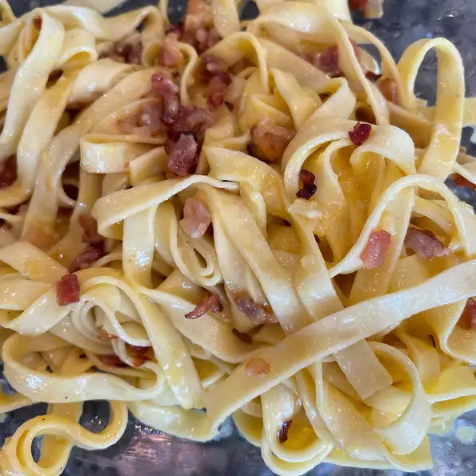

Carbonara Pasta

A recipes to prepare Carbonara using cream, cheese and bacon.
It's a great recipes for people looking for something simple yet very comforting a really
good dishes when you're having a bad day.
- 1 pound bacon
- 1 big onion
- 1 garlic
- 3 tablespoon honey
- 1 package pasta
- Heavy cream
- 1 egg yolks
- Chop the onion, bacon and garlic into thin strips
- Bring a large pot of lightly salted water to a boil. Add pasta and cook for 8 to 10 minutes or until al dente.
Drain pasta, then return it to the pot.
- Whisk Parmesan, cream, and egg yolks together in a medium bowl. Pour bacon mixture over pasta;
stir in cream mixture. Season with salt and pepper, add honey while cooking the cream.
Return to main page